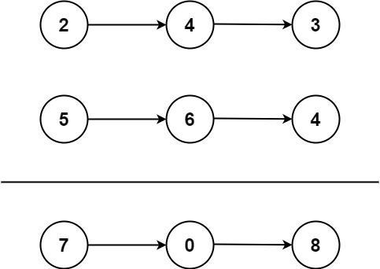

Add Two Numbers
You are given two non-empty linked lists representing two non-negative integers. The digits are stored in reverse order, and each of their nodes contains a single digit. Add the two numbers and return the sum as a linked list.
You may assume the two numbers do not contain any leading zero, except the number 0 itself.
Example 1:
Input: l1 = [2,4,3], l2 = [5,6,4]
Output: [7,0,8]
Explanation: 342 + 465 = 807.
Example 2:
Input: l1 = [0], l2 = [0]
Output: [0]
Example 3:
Input: l1 = [9,9,9,9,9,9,9], l2 = [9,9,9,9]
Output: [8,9,9,9,0,0,0,1]
Решение:
# Definition for singly-linked list.
# class ListNode:
# def __init__(self, val=0, next=None):
# self.val = val
# self.next = next
class Solution:
def addTwoNumbers(self,
l1: Optional[ListNode],
l2: Optional[ListNode]) -> Optional[ListNode]:
a=0
mul=1
while l1 is not None:
a += l1.val * mul
mul *= 10
l1 = l1.next
b=0
mul=1
while l2 is not None:
b += l2.val * mul
mul*=10
l2 = l2.next
summ=a+b
firstNode=None
prevNode=None
while summ!=0:
currNode = ListNode()
if firstNode is None:
firstNode = currNode
divRemain=summ % 10
# result.append(divRemain)
currNode.val = divRemain
if prevNode is not None:
prevNode.next = currNode
summ=(summ-divRemain) // 10
prevNode=currNode
if firstNode is None:
return ListNode(0)
else:
return firstNode
Пояснение:
Вначале из однонаправленных списков извлекаются хранимые в них числа a и b. Для извлечения каждый разряд умножается на соответсвующий десятичный множитель и складывается с аккумулирующим значением.
Значения складываются, и из полученной суммы формируется итоговый список. Формирование списка идет с младшего разряда к старшему. Число делится на 10, запоминается остаток от деления - это будет самый младший разряд. Сумма уменьшается в десять раз с отбрасыванием остатка от деления. Процесс повторяется пока разрядов не останется.